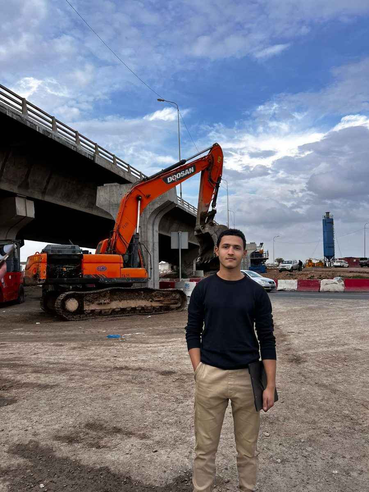
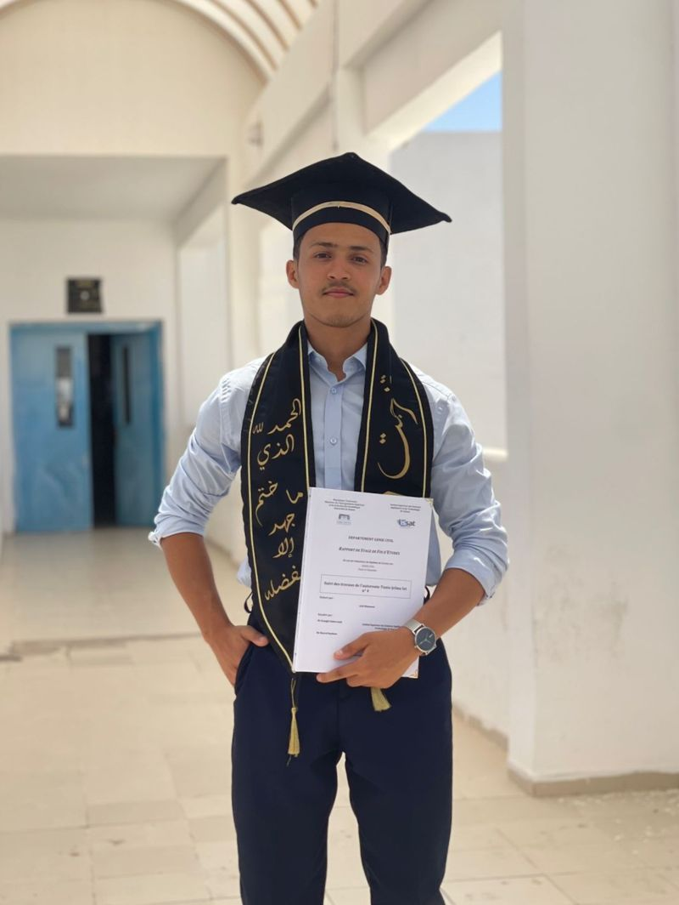
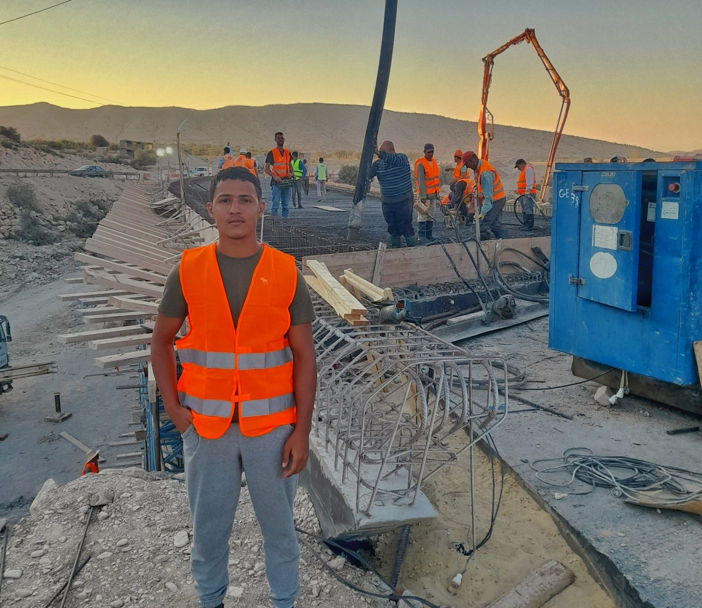

Févr. – mai 2026 · Msaken, Sousse
Suivi des travaux de l'autoroute Tunis–Jelma, Lot 4
InfrastructureStage de fin d'études consacré au suivi des travaux de l'autoroute Tunis–Jelma, Lot 4.
Voir le projet en détail
Étudiant ingénieur en génie civil · ISSAT Sousse · ENIS Sfax

Classé parmi les meilleurs étudiants de ma promotion en génie civil à l'ISSAT Sousse, j'aime transformer les connaissances théoriques en solutions concrètes sur le terrain.
Mon objectif : approfondir mon expertise dans un master international de haut niveau, entièrement financé, et contribuer à des projets d'infrastructure à l'échelle mondiale.
École Nationale d'Ingénieurs de Sfax (ENIS)
Institut Supérieur des Sciences Appliquées et de Technologie de Sousse
Lycée Dar Lamen, Kairouan
Msaken, Sousse. Suivi des travaux de l'autoroute Tunis–Jelma, Lot 4.
Sousse. Stage en bâtiment et génie civil.
Kairouan. Stage en gestion et administration.
Kairouan. Stage en bâtiment et génie civil.
Membre actif : réunions techniques, ateliers et activités d'ingénierie.

Du calcul
au chantier.
Févr. – mai 2026 · Msaken, Sousse
Stage de fin d'études consacré au suivi des travaux de l'autoroute Tunis–Jelma, Lot 4.
Voir le projet en détailJuin 2025 · Sousse
Stage au sein d'Engineering Service Office Tunisia, dans le domaine du bâtiment et du génie civil.
Juil. 2024 · Kairouan
Stage à l'administration régionale de l'habitat et du territoire de Kairouan.
Août 2024 · Kairouan
Stage au sein de l'entreprise BATAM MG, en gestion et administration.
Arabe et français : langues maternelles. Anglais : niveau B2 dans les cinq compétences.
De courts articles d'ingénierie pour partager ma compréhension technique.
ISSAT Sousse
British Council · Voir le document
ISSAT Sousse · Voir le document
Une opportunité de stage, un projet ou une question ? Écrivez-moi.
mohamedaydi45@gmail.comMon CV complet est disponible sur demande.